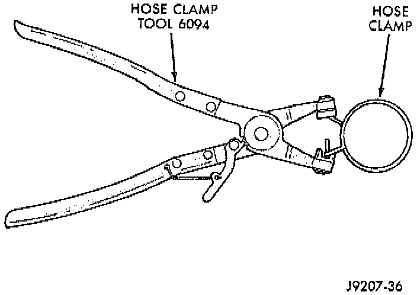
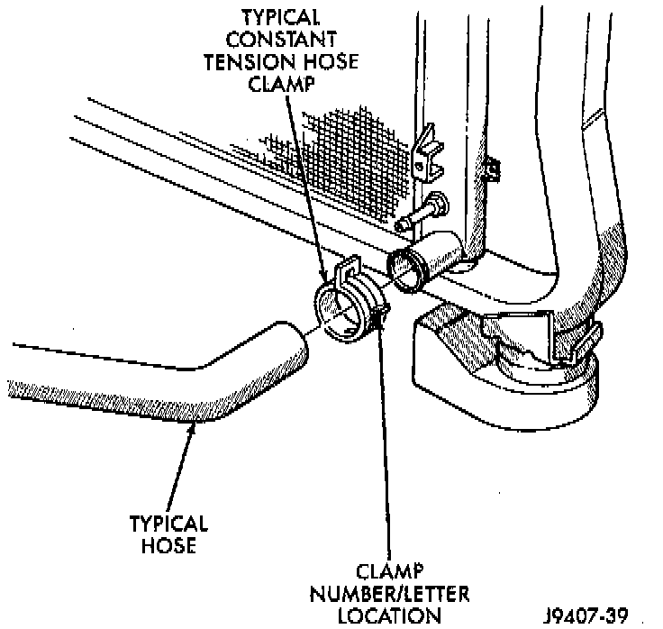
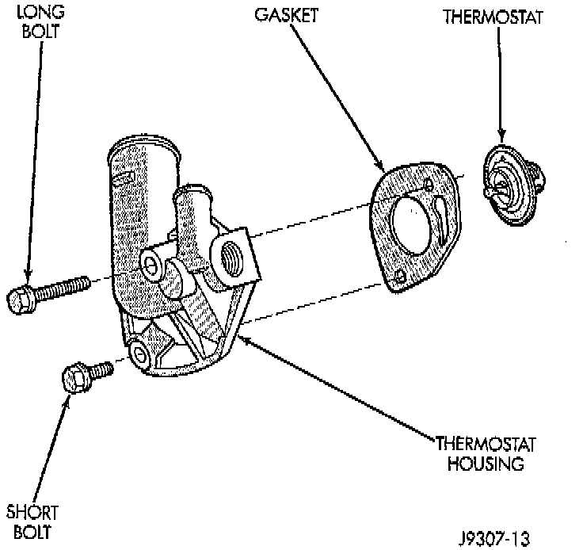
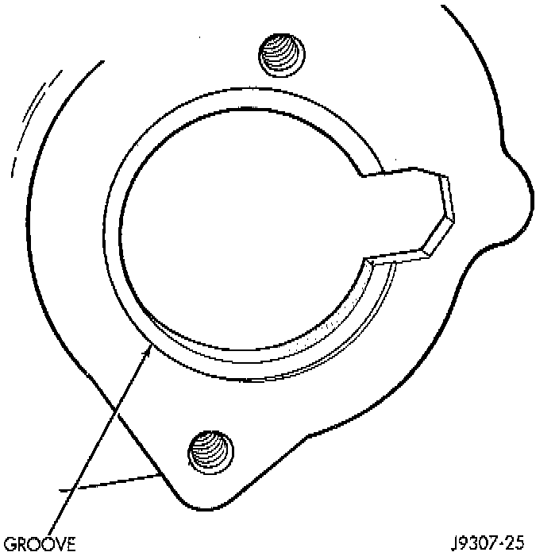

Thermostat: Service and Repair
WARNING: DO NOT LOOSEN THE RADIATOR DRAINCOCK WITH THE SYSTEM HOT AND PRESSURIZED. SERIOUS BURNS FROM THE COOLANT CAN OCCUR.NOTE: Do not waste reusable coolant. If the solution is clean, drain the coolant into a clean container for reuse.
REMOVAL
1. Drain the coolant from the radiator until the level is below the thermostat housing.

WARNING: CONSTANT TENSION HOSE CLAMPS ARE USED ON MOST COOLING SYSTEM HOSES. WHEN REMOVING OR INSTALLING, USE ONLY TOOLS DESIGNED FOR SERVICING THIS TYPE OF CLAMP, SUCH AS SPECIAL CLAMP TOOL (NUMBER 6094). SNAP-ON CLAMP TOOL (NUMBER HPC-20) MAY BE USED FOR LARGER CLAMPS. ALWAYS WEAR SAFETY GLASSES WHEN SERVICING CONSTANT TENSION CLAMPS.

CAUTION: A number or letter is stamped into the tongue of constant tension clamps. If replacement is necessary, use only an original equipment clamp with matching number or letter.
2. Remove radiator upper hose and heater hose at thermostat housing.
3. Disconnect wiring connector at engine coolant temperature sensor.

4. Remove thermostat housing mounting bolts, thermostat housing, gasket and thermostat. Discard old gasket.
5. Clean the gasket mating surfaces.
INSTALLATION
1. Install the replacement thermostat so that the pellet, which is encircled by a coil spring, faces the engine. All thermostats are marked on the outer flange to indicate the proper installed position.

a. Observe the recess groove in the engine cylinder head.
b. Position thermostat in groove with arrow and air bleed hole on outer flange pointing up.
2. Install replacement gasket and thermostat housing.
CAUTION: Tightening the thermostat housing unevenly or with the thermostat out of its recess may result in a cracked housing.
3. Tighten the housing bolts to 22 Nm (16 ft. lbs.) torque.
4. Install hoses to thermostat housing.
5. Install electrical connector to coolant temperature sensor.
6. Be sure that the radiator draincock is tightly closed. Fill the cooling system to the correct level with the required coolant mixture. Refer to Refilling Cooling System in this group.
7. Start and warm the engine. Check for leaks.